PPC-JETORIN-101¶
Version 1.0
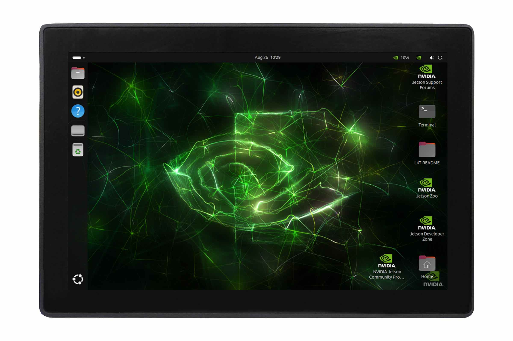
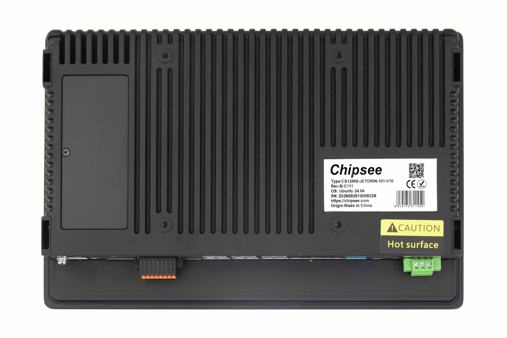
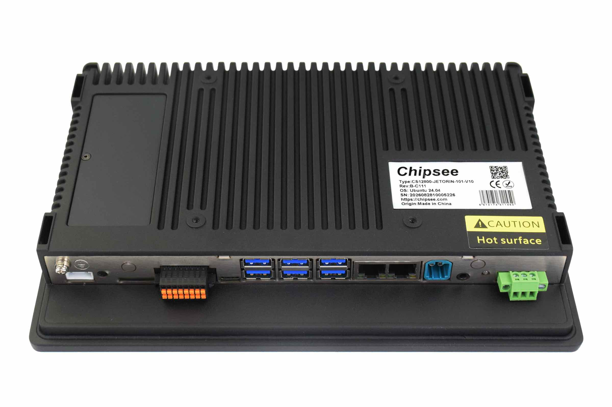
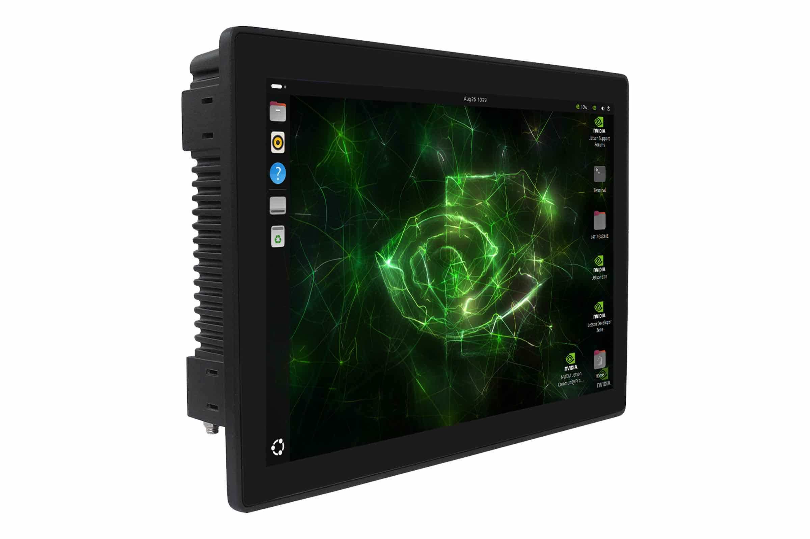
Product Overview¶
The PPC-JETORIN series PPC-JETORIN-101 is a rugged, high-quality NEMA 4X/IP65-compliant industrial panel PC. This single board computer features a 10.1” capacitive touch screen with a resolution of 1280 x 800 pixels.
The PPC-JETORIN-101 Industrial Panel PC supports four Jetson module variants: NVIDIA Jetson Orin Nano 4GB/8GB and NVIDIA Jetson Orin NX 8GB/16GB. Equipped with a broad range of connectivity options, it satisfies demanding application requirements in harsh industrial and outdoor environments.
A specially designed magnesium-aluminum alloy housing with fins for increased heat dissipation serves as a passive cooler, eliminating the need for built-in fans. The fan-less design reduces noise, as well as the maintenance costs and efforts, increasing reliability at the same time.
Caution
Be careful when handling the product while it is operating: the back panel might become hot under heavy CPU load.
Ordering Options¶
Most of the Chipsee products can be customized during the ordering process. The product will be shipped with the pre-installed factory defaults if no extra requirements are specified. The table in the Hardware Features section provides information about the default options bundled with the product.
Note
You can order PPC-JETORIN-101 from the official Chipsee Store or from your nearest distributor.
Operating System¶
By default, PPC-JETORIN-101 comes with Linux(Ubuntu 24.04) pre-installed.
Optional Features¶
Jetson Orin Module¶
The Jetson Orin Module appears in different variants (NVIDIA Jetson Orin Nano 4GB/8GB and NVIDIA Jetson Orin NX 8GB/16GB).
The PPC-JETORIN-101 Industrial Panel PC does not include the Jetson Orin Module by default.
If you would like to purchase it with a Jetson Orin Module, you can select it at the Chipsee store during the ordering process.
Item |
Jetson Orin Nano 4GB |
Jetson Orin Nano 8GB |
Jetson Orin NX 8GB |
Jetson Orin NX 16GB |
|---|---|---|---|---|
AI Performance |
34 TOPS |
67 TOPS |
117 TOPS |
157 TOPS |
GPU |
512 core NVIDIA Ampere GPU with 16 Tensor Cores |
1024 core NVIDIA Ampere GPU with 32 Tensor Cores |
1024 core NVIDIA Ampere GPU with 32 Tensor Cores |
1024 core NVIDIA Ampere GPU with 32 Tensor Cores |
GPU Max Frequency |
1020 MHz |
1020 MHz |
1173 MHz |
1173 MHz |
CPU |
6 core Arm® Cortex® A78AE v8.2 64 bit CPU 1.5 MB L2 + 4 MB L3 |
6 core Arm® Cortex® A78AE v8.2 64 bit CPU 1.5 MB L2 + 4 MB L3 |
6 core Arm® Cortex® A78AE v8.2 64 bit CPU 1.5 MB L2 + 4 MB L3 |
8 core Arm® Cortex® A78AE v8.2 64 bit CPU 2 MB L2 + 4 MB L3 |
CPU Max Frequency |
1.7 GHz |
1.7 GHz |
2 GHz |
2 GHz |
DL Accelerator |
- |
- |
1x NVDLA v2 |
2x NVDLA v2 |
DLA Max Frequency |
- |
- |
1230 MHz |
1230 MHz |
Memory |
4GB 64 bit LPDDR5, 51 GB/s |
8GB 128 bit LPDDR5, 102 GB/s |
8GB 128 bit LPDDR5, 102 GB/s |
16GB 128 bit LPDDR5, 102.4 GB/s |
Storage |
(Supports external NVMe) |
(Supports external NVMe) |
(Supports external NVMe) |
(Supports external NVMe) |
Video Encode |
1080p30 supported by 1-2 CPU cores |
1080p30 supported by 1-2 CPU cores |
1x 4K60(H.265), 3x 4K30 (H.265), 6x 1080p60(H.265), 12x 1080p30(H.265) |
1x 4K60(H.265), 3x 4K30 (H.265), 6x 1080p60(H.265), 12x 1080p30(H.265) |
Video Decode |
1x 4K60(H.265), 2x 4K30(H.265), 5x 1080p60(H.265), 11x 1080p30(H.265) |
1x 4K60(H.265), 2x 4K30(H.265), 5x 1080p60(H.265), 11x 1080p30(H.265) |
1x 8K30(H.265), 2x 4K60(H.265), 4x 4K30(H.265), 9x 1080p60(H.265), 18x 1080p30(H.265) |
1x 8K30(H.265), 2x 4K60(H.265), 4x 4K30(H.265), 9x 1080p60(H.265), 18x 1080p30(H.265) |
4G/5G/WiFi/BT Module¶
The PPC-JETORIN-101 Industrial Panel PC does not include WiFi/BT and/or 4G/5G modules by default. These modules are optional and can be selected at the Chipsee store during the ordering process.
The 4G/5G module only supports USB2.0 speed.
Warning
Hardware Features¶
The PPC-JETORIN-101 Industrial Panel PC offers a broad range of performance and connectivity options for scalable integration, providing expandability to fit future requirements. Some of the key features are listed in the table below.
PPC-JETORIN-101 |
|
|---|---|
Display |
10.1” LCD, resolution 1280 x 800 px, brightness 350 cd/m2 |
Storage |
Default mSATA 128GB SSD; |
Touch |
Capacitive Touch Screen |
Audio |
1 x 3.5mm Audio Output |
USB |
6 x USB 3.0 Type A HOST and 1 x Type C port |
LAN |
2 x RJ45, 1Gbps |
UART |
Default 2 x RS232(include one debug port). 1 x RS232 can be configured to 1 x RS485(optional) |
GPIO |
N/A |
4G/5G |
Optional, module available from the Chipsee store |
WiFi/BT |
Optional, module available from the Chipsee store |
I2C |
2 x I2C port |
HDMI |
N/A |
Power IN |
from 15V to 48V DC |
Power Consumption |
30W Max |
OS |
Ubuntu 24.04(default) |
Operating Temp. |
From 0°C to +50°C |
Storage Temp. |
From -30°C to +80°C |
Humidity |
From 5% to 95% relative humidity (no condensation) |
Dimensions |
253.20 X 171.83 X 36mm |
EMC |
CE/FCC/ROHS/ISO-9001 |
Mounting |
VESA 100mm, Panel mounting with fixtures, Wall, Desktop |
Weight |
1200g |
Power Input¶
The PPC-JETORIN-101 Industrial Panel PC can be powered by a wide range of input voltages: from 15V to 48V DC DC.
It is a 3 Pin, 3.81mm screw terminal connector. As shown in the figure below.
{kind=link}
Power Input
Note that the “+” sign represents the positive power input. The “-” terminal is shorted to the ground. The product has a “ignition signal” optional feature. By default the ignition signal is not installed. If you need this feature you can contact us when placing an order. In this setup, Pin 3 is the ignition signal pin. To use this feature, apply a 12V or 24V DC input (relative to -) to Pin 3. If Pin 3 detects a low input voltage, the product will be shutdown. If Pin 3 detects a high input voltage, the product will be boot and running.
Power Input Definition |
||
|---|---|---|
Pin Number |
Definition |
Description |
Pin 1 |
Positive Input |
DC Power Positive Terminal |
Pin 2 |
Negative Input |
DC Power Negative Terminal |
Pin 3 |
IGN |
Ignition Signal |
Note
The ignition signal “IGN” is an optional feature, it is not mounted default.
Touch Screen¶
PPC-JETORIN-101 is equipped with a multi-point capacitive touch screen. Its multitouch detection capability enables implementation of some advanced GUI operations, such as two-finger zoom or rotation.
The capacitive touch screen can be operated by fingers, gloves with a special coating, or a conductive stylus.
Size/Type: 10.1” multi-point capacitive touch screen
Touch screen structure: G+F+F
Surface Strength: 7H
Surface Hardness: 50G steel ball 70cm impact drop 3 times not broken
Service Life (MTBF): 50 million touch events
Light Transmittance: > 92%
Connectivity¶
There are many connectivity options available on the PPC-JETORIN-101 industrial PC. It has 6 x USB Type A connectors configured as HOSTS, 1 x Type C connector, 2 x RJ45 connectors supporting Gigabit Ethernet (GbE), and up to 2 x RS232 connectors(include 1 x Debug port), one of RS232 can be configured to 1 x RS485, 1 x Fakra-Mini connector.
RS232/485/I2C/CAN Connectors¶
The PPC-JETORIN-101 Industrial Panel PC has 2 x 8-pin 2.54mm connector with pluggable terminal block.
{kind=link}
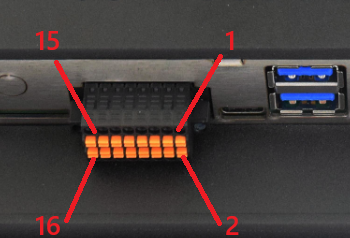
RS232,RS485,I2C,CAN
Pin |
Signal Name |
Pin |
Signal Name |
|---|---|---|---|
1 |
I2C7_SCL_3V3 |
2 |
I2C7_SDA_3V3 |
3 |
I2C1_SCL_3V3 |
4 |
I2C1_SDA_3V3 |
5 |
CAN1_L (-) |
6 |
CAN1_H (+) |
7 |
CAN0_L (-) |
8 |
CAN0_H (+) |
9 |
RS485_1+ (A) |
10 |
RS485_1- (B) |
11 |
RS232_1_TXD |
12 |
RS232_1_RXD |
13 |
RS232_2_TXD |
14 |
RS232_2_RXD |
15 |
GND |
16 |
GND |
Attention
Pins 9/10 (RS485_1) and pins 11/12 (RS232_1) share one hardware multiplexed channel. Only one interface can be selected for use at a time, cannot work simultaneously.
The RS232_1 is enabled and RS485_1 is disabled default.
The 120Ω match resistor for CAN bus is NOT mounted by default.
The 120Ω match resistor for RS485 bus is NOT mounted by default.
Fakra-Mini Connectors¶
The PPC-JETORIN-101 Industrial Panel PC supports Fakra-Mini automotive connector as shown in the figure below.
{kind=link}
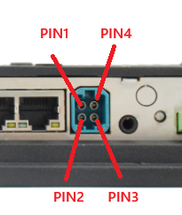
Fakra-Mini automotive Connectors
Fakra-Mini automotive connector, driven by MAX96724 GMSL-2 serializer chip. It outputs four independent GMSL-2 single-ended serial signals, used to connect remote automotive cameras via coaxial cables with PoC power-over-coax.
Pin |
Net Name |
Description |
|---|---|---|
1 |
A0P |
GMSL-2 Serial Lane A positive output |
2 |
B0P |
GMSL-2 Serial Lane B positive output |
3 |
C0P |
GMSL-2 Serial Lane C positive output |
4 |
D0P |
GMSL-2 Serial Lane D positive output |
USB HOST Connectors¶
PPC-JETORIN-101 is equipped with 7 USB connectors. One is a USB2.0 Type C connector supporting device, and USB Recovery. In addition, there are three, dual stacked USB 3.0 Type A connectors. Each connector supports host mode only.
{kind=link}
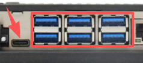
6 x USB3.0 HOST Connectors
LAN Connectors¶
2 x LAN (RJ45) connectors provide Ethernet connectivity over standardized Ethernet cables. The integrated two-port Ethernet interface supports 10/100/1000BASE-T/TX specifications with automatic speed negotiation feature. Power over Ethernet (PoE) is not supported.
{kind=link}
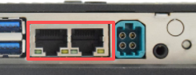
2 x RJ45 GbE LAN Connectors
Note
Use CAT5 or better cables to achieve full data throughput over maximum distance defined by the 1000BASE-T standard (100m).
WiFi & BlueTooth Module¶
The PPC-JETORIN-101 Industrial Panel PC is equipped with the popular SKO.WBM80X2P.2 WiFi/BT module which supports BT/BLE 2.1/3.0/4.x/5.3/5.4, as well as 802.11ax/ac/a/b/g/n 600Mbps 2.4/5.8 GHz Wireless LAN (WLAN).
{kind=link}
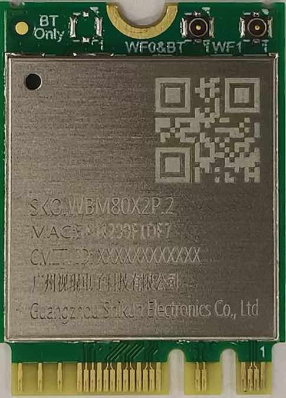
SKO.WBM80X2P.2 WiFi/BT Module
The PPC-JETORIN-101 includes an SMA connector for an external WiFi/BT antenna, as illustrated in the figure below.
{kind=link}
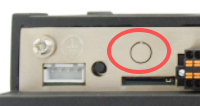
WiFi+BT Antenna SMA
4G/LTE Module¶
The PPC-JETORIN-101 Industrial Panel PC is equipped with a M.2 connector that can connect an optional 4G/LTE module. The customer will also need a SIM Card Holder and a 4G/LTE antenna connector to ensure 4G/LTE works.
SIM card does NOT support hot plug. Power off before inserting or removing SIM card.
{kind=link}
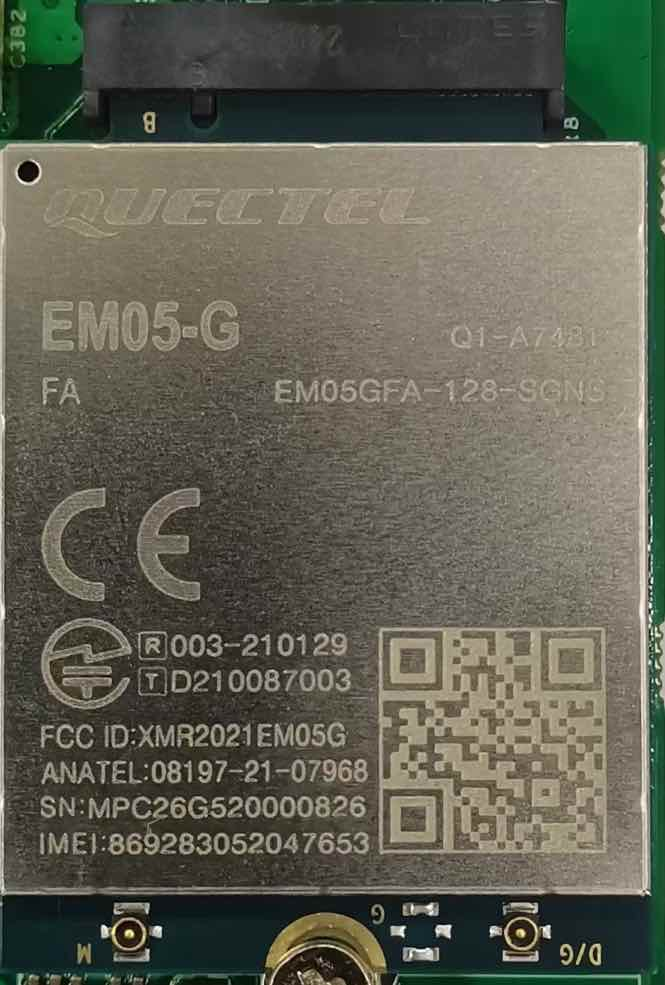
M.2 Connector & 4G Module
{kind=link}
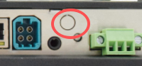
4G/LTE Antenna
{kind=link}
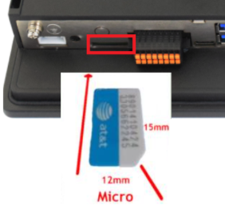
SIM Card Direction
Attention
The product does not come shipped with the 4G/LTE module by default. The customer can choose the 4G/LTE module option when placing an order, we will install all the necessary components.
Audio¶
The product has an audio jack to support line out, doesn’t support capture.
{kind=link}
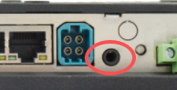
Audio Jack
{kind=link}
FAN Connectors¶
The PPC-JETORIN-101 Industrial Panel PC supports 4 pin fan header as shown in the figure below.
{kind=link}
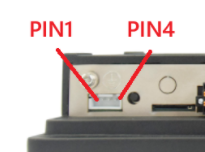
FAN Connectors
It serves as an external fan interface for connecting an off board fan, supporting PWM speed control and tachometer speed monitoring. Check the below table to know the pin description.
Pin |
Net Name |
Description |
|---|---|---|
1 |
GND |
Power ground |
2 |
VDD_12V |
12V fan power supply positive |
3 |
TACH (FAN_TACH) |
Fan tachometer speed feedback signal |
4 |
PWM (FAN_PWM) |
Fan speed PWM control signal |
Mounting Procedure¶
The PPC-JETORIN-101 Industrial Panel PC supports VESA 100 x 100 mounting pattern with 4 x M4 screws, enabling simplified installation onto any standard VESA mounting rack.
The PPC-JETORIN-101 Industrial Panel PC supports panel mount, wall mount and desktop.
You can find detailed information about mounting in the Mount IPC Guide.
Mechanical Specifications¶
The outer mechanical dimensions of The PPC-JETORIN-101 Industrial Panel PC are 253.20 X 171.83 X 36mm (W x L x H). Please refer to the technical drawing in the figure below for details related to the specific product measurements.
{kind=link}
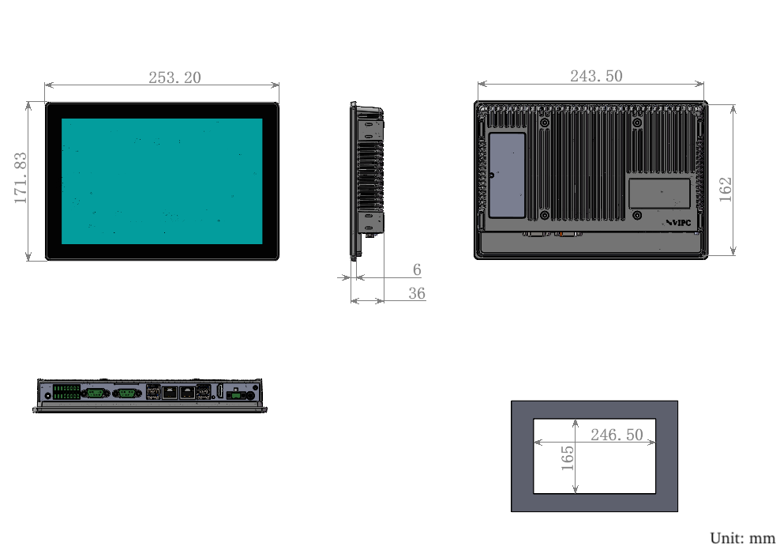
Technical Drawing and Cutout Dimensions
Disclaimer¶
This document is provided strictly for informational purposes. Its contents are subject to change without notice. Chipsee assumes no responsibility for any errors that may occur in this document. Furthermore, Chipsee reserves the right to alter the hardware, software, and/or specifications set forth herein at any time without prior notice and undertakes no obligation to update the information contained in this document.
While every effort has been made to ensure the accuracy of the information contained herein, this document is not guaranteed to be error-free. Further, it does not offer any warranties or conditions, whether expressed orally or implied in law, including implied warranties and conditions of merchantability or fitness for a particular purpose. We specifically disclaim any liability with respect to this document, and no contractual obligations are formed either directly or indirectly by this document.
Despite our best efforts to maintain the accuracy of the information in this document, we assume no responsibility for errors or omissions, nor for damages resulting from the use of the information herein. Please note that Chipsee products are not authorized for use as critical components in life support devices or systems.
Technical Support¶
If you encounter any difficulties or have questions related to this document, we encourage you to refer to our other documentation for potential solutions. If you cannot find the solution you’re looking for, feel free to contact us. Please email Chipsee Technical Support at support@chipsee.com, providing all relevant information. We value your queries and suggestions and are committed to providing you with the assistance you require.